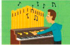
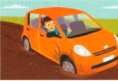

Công việc trông có vẻ tốt on ............................., nhưng thực tế lại hoàn toàn khác.
Tôi rất ghét phải làm việc trong một run-of-the-............................. job [công việc tẻ nhạt, thường nhật].
Tara đã bận ngập đầu up to ............................. eyes trong công việc suốt cả ngày.
Khi John nghỉ hưu, con trai ông ấy sẽ ............................. into his shoes [thay thế vị trí của ông ấy].
Em họ của tôi là một nhạc sĩ up-and-............................. [đầy triển vọng].
Tôi phải cố gắng get out of a ............................. [thoát khỏi lối mòn] trong công việc.
Tôi đã bận rộn on the ............................. cả ngày.
Tại sao sếp của Kirsty lại give her the ............................. [sa thải cô ấy]?
Tôi ước gì bạn không talk ............................. [nói chuyện công việc] suốt ngày như vậy!
Rosie đã rất hào hứng khi được .............................hunted cho công việc mới của mình.
25.2Những bức tranh này làm bạn liên tưởng đến những thành ngữ nào?
1
2

3

4
5
6
25.3Nối mỗi thành ngữ ở cột bên trái với định nghĩa của nó ở cột bên phải.
1behind the scenes
arất bận rộn
2dead-end
bbị sa thải / bị đuổi việc
3get the sack
cnỗ lực / cố gắng
4off the record
dđầy hứa hẹn / triển vọng
5on hold
eẩn giấu / hậu trường
6pull out all the stops
fkhông chính thức
7rushed off your feet
gbị trì hoãn
8up-and-coming
hkhông có triển vọng phát triển
25.4Hoàn thành mỗi thành ngữ dưới đây.
Chúng tôi đã có một ngày làm việc khó khăn hôm nay. Tất cả chúng tôi đều (1) ............................. under [ngập đầu trong việc] vì chúng tôi có một số khách quý đến thăm vào tuần tới và ban quản lý đã quyết định pull out all the (2) ............................. [nỗ lực hết sức] để tạo ấn tượng với họ. Chúng tôi sẽ phải chịu áp lực có work (3) ............................. out [gặp nhiều khó khăn/bận rộn] để hoàn thành mọi việc kịp thời. Các nhiệm vụ dài hạn đã được put on (4) ............................. [tạm hoãn] để mọi thứ sẵn sàng đón tiếp khách. Bất kỳ ai phản đối đều được thông báo rằng họ sẽ (5) ............................. the sack [bị sa thải] và tất cả những ai muốn (6) ............................. the career ladder [thăng tiến trong sự nghiệp] sẽ bị (7) ............................. full [bận rộn hết tay chân] cho đến khi tuần này kết thúc. Những vị khách sẽ rất kinh ngạc nếu họ biết những gì đang diễn ra (8) ............................. the scenes [phía sau hậu trường]!
25.5Viết các câu sử dụng sáu trong số các thành ngữ ở trang bên trái nói về công việc hiện tại của bạn và những hy vọng cũng như kế hoạch của bạn cho công việc trong tương lai.